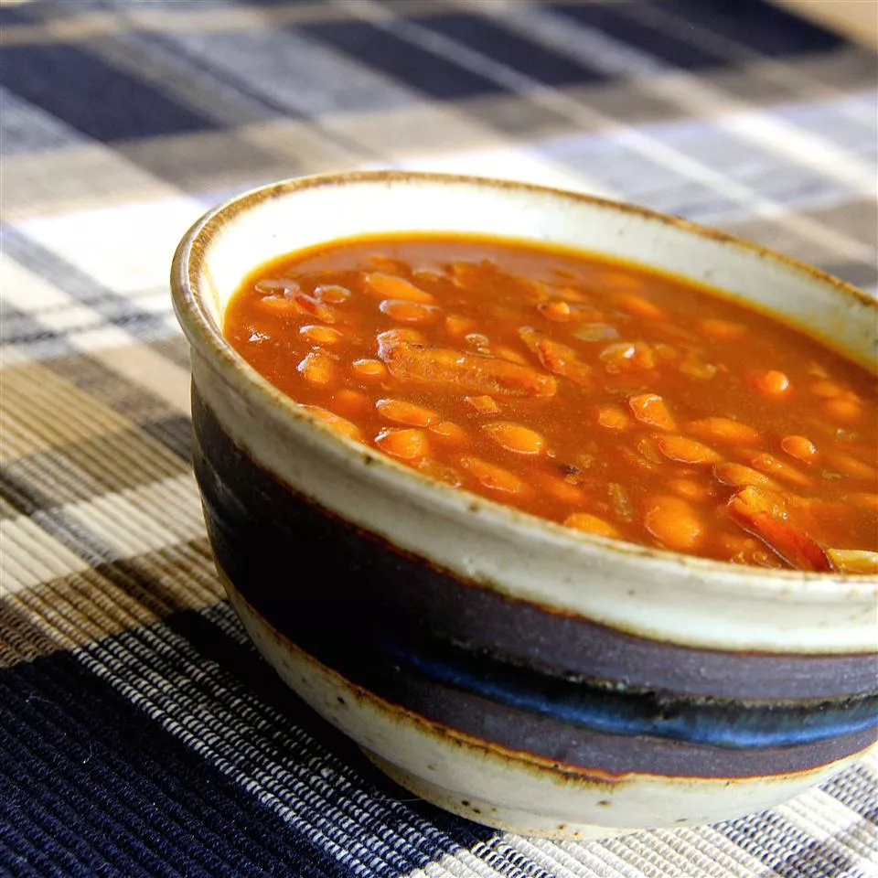

Skillet Baked Beans

Best quick and easy stovetop baked beans.
Ingredients
- 6 slices bacon, cut into 1-inch pieces
- 4 (16 ounce) cans pork and beans
- 1 cup chopped onion
- ½ cup packed brown sugar
- 6 tablespoons molasses
- 2 teaspoons yellow mustard
Steps
- Cook and stir bacon in a large skillet over medium-high heat until crisp, about 10 minutes.
- Stir pork and beans, onion, brown sugar, molasses, and mustard with bacon in the skillet; bring to a boil,
reduce heat to medium-low, and simmer, stirring occasionally, until thickened, 15 to 20 minutes.